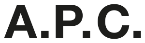
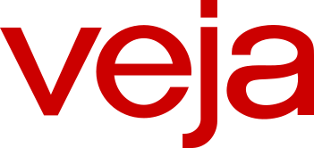

Quel cabas choisir, quelle maison de prêt-à-porter mérite son prix ? Nous comparons 27 marques sur les matières, la coupe, le prix et le service. Classements mis à jour le 16 octobre 2026.





Dix marques, dix cabas phares, cinq critères pondérés et affichés avant le classement.


Choisissez deux marques, nous affichons leurs notes sur nos cinq critères, calculées depuis nos relevés d'octobre 2026.
Notes sur 10, relevé de démonstration d'octobre 2026.
Un cabas, un sac de travail, une robe ou un cadeau, les meilleures maisons ne sont jamais les mêmes.
Note globale sur 10, moyenne pondérée de nos cinq critères, mise à jour le 16 octobre 2026. Le classement bouge chaque semaine avec les nouveaux relevés. Notes et prix, relevé de démonstration.
Voir la méthode de notationDes critères publiés avant chaque classement, des poids qui ne changent pas d'un article à l'autre, des prix datés. Le détail est dans notre méthodologie.
Prix, matières, origine et dimensions sur les sites officiels en France, hors soldes, à une date affichée.
Chaque sac est rempli et porté une semaine, chaque robe lavée ou nettoyée selon l'étiquette.
Critères et poids affichés en tête de chaque classement, notes refaites chaque mois.
Un email le vendredi, le classement de la semaine, les nouveaux comparatifs et les pièces qui reviennent en stock.
Un email par semaine, désinscription en un clic.